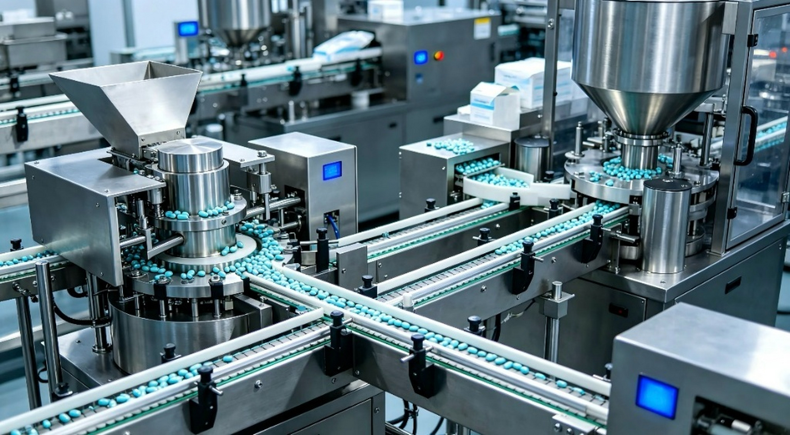
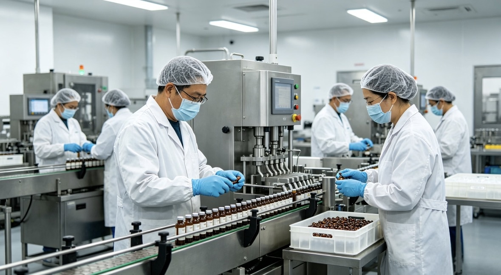
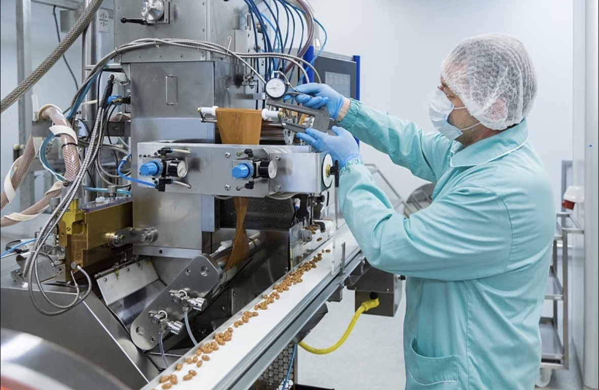
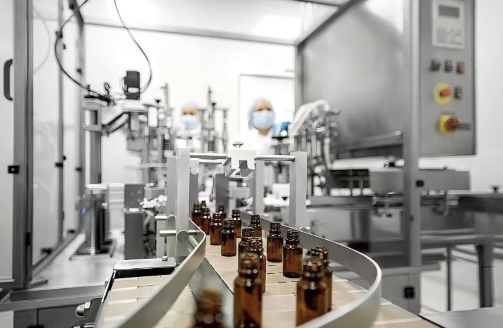
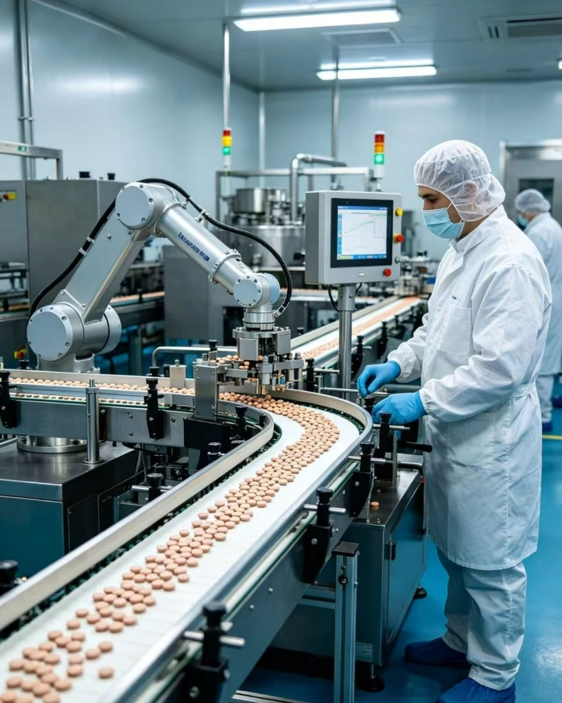
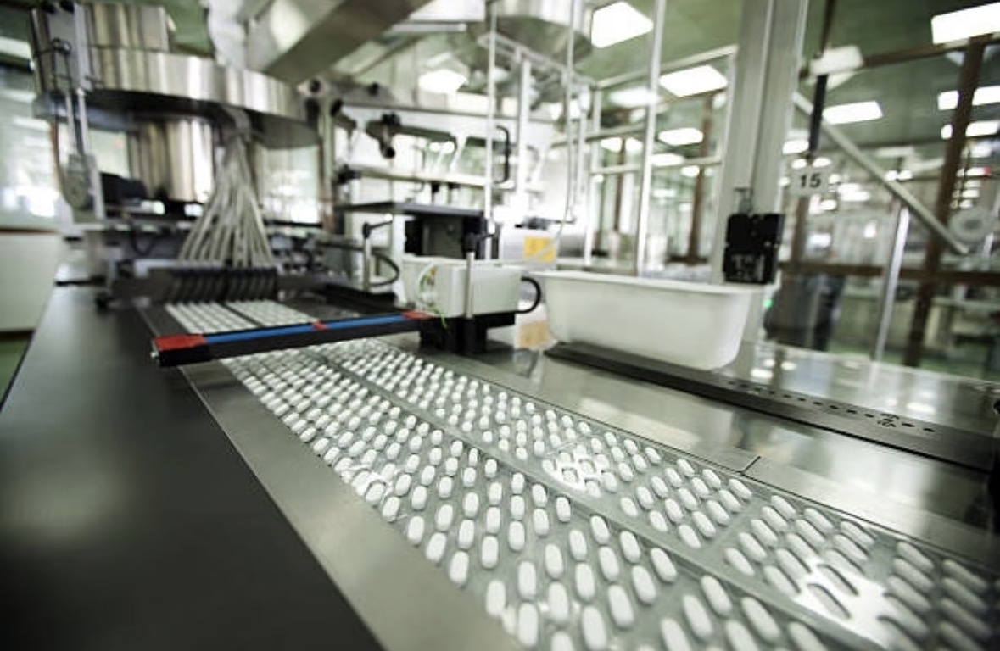

自主品牌
围绕消费健康、动物营养与生物基材料，构建长期产品价值。

01 — ABOUT
Bon Santé 帮善特是集研发与制造于一体的企业。我们以营养代谢组学为研究基础，把天然资源、先进工艺与自有生产能力连接成完整产品体系。
围绕消费健康、动物营养与生物基材料，构建长期产品价值。
聚焦细胞级代谢通路、天然成分活性与药效评价。
温哥华自有生产基地，为产品质量、稳定供应与合规交付提供后盾。
研发、分析、制造与追溯在同一质量逻辑下协同。
02 — PATENTED TECHNOLOGY
以发酵、反应、分子量控制与多目标联产为主线，建立从原料到活性成分的系统技术能力。
支撑技术ESM 生物反应器耦合酶酵解 · 多级逆流提取 · 分子蒸馏 · ISM 混菌液态发酵
03 — EXTRACTION PROCESS
九步连续路径，把组织研究、化学分析、反应器工程与药效评价纳入同一产品设计逻辑。
植物干细胞 / 植物工厂
指纹图谱 HPLC/MS
95% 细胞核有效成分溢出
一次分离 50 个组谱 · 日处理几十吨 · 无人化连续制备
全植物链 99.9% 高效利用
从一株植物到一套可评价、可放大、可制造的健康产品方案。
04 — SCIENCE PLATFORMS
以纳米液化、代谢组学、延衰模型与植能烯材料平台，建立可验证的产品证据链。
以纳米级粒径控制提升活性成分在复杂消化环境中的表现。
高通量筛查连接研发、质控与临床验证路径。
以模式生物研究活性成分与衰老相关通路。
连接废弃生物质热解、载药与下一代功能材料应用。
2–10nm 纳米粒子，sp2 杂化石墨核；具备优异水溶性与表面修饰能力。

05 — EFFICACY EVALUATION
世界首创建立可视化、物质化的中药药效评估体系，从作用机理、影像表现与物质基础三个维度形成证据。
RNAseq / MiRNAseq 研究作用机理
以影像方式可视化药效
以物质化路径研究药效
三个月内完成中药药效和毒理评价。
06 — SCIENTIFIC TEAM
以营养代谢组学为核心研究方向，推动分析技术、产品开发与制造体系协同。
07 — VANCOUVER BASE
研发、制造、质控与数字化追溯在温哥华汇合，为自主产品提供稳定、合规、可规模化的制造能力。
天然健康产品场地许可体系
衔接产品注册与加拿大市场准入
Feeds Act / Feeds Regulations
膳食补充剂 cGMP 要求

08 — CAPACITY
4
从原料处理、纳米液到固体制剂与生物聚合物，形成完整产能布局。
biomass 年处理能力
纳米液年产能
硬胶囊 15 亿粒 / 年 · 无菌液剂 6000 万支 / 年
生物聚合物年产能

09 — PORTFOLIO
自主技术从实验室走向消费健康、动物营养与生物基材料应用。

10 — PARTNERSHIP
我们面向价值观一致的品牌方、渠道伙伴与产业机构，探索产品、市场与技术层面的长期合作。
围绕联合产品、品牌资源与科学内容展开协同。
连接北美及国际市场渠道，推动自主产品触达目标人群。
围绕研究平台、评价体系与材料应用探索产业协同。

VANCOUVER · CANADA
欢迎品牌方、渠道伙伴与产业机构，就产品合作、市场拓展与技术协同展开交流。